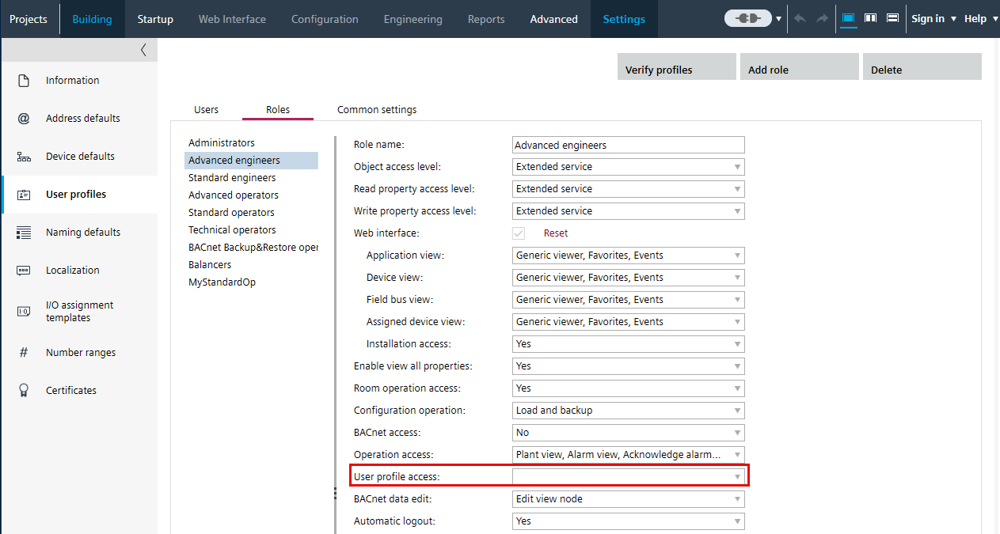

Configuration settings
The Configuration submenus allow you to engineer a device and view information about devices and the system.
Name | Description |
|---|---|
Displays basic information about the device. | |
Allows you to modify the IP network settings for a Desigo device. | |
Allows you to add, delete and edit user profiles. The Users tab only displays if you have Administrator privileges or assigned privileges defined in ABT Site.  Note: It is not recommended to create a user in the Web interface as they are not visible under users in ABT Site. | |
Displays information for the remote automation stations that can be accessed by system control. Is only available when you are connected to a device that supports operating and monitoring. | |
Contains detailed information on device configuration along with all existing field buses for commissioning and data point test. |